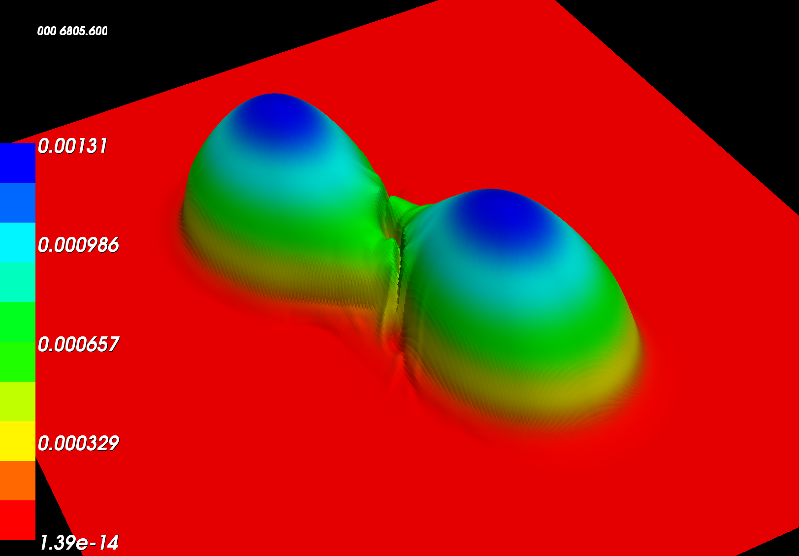
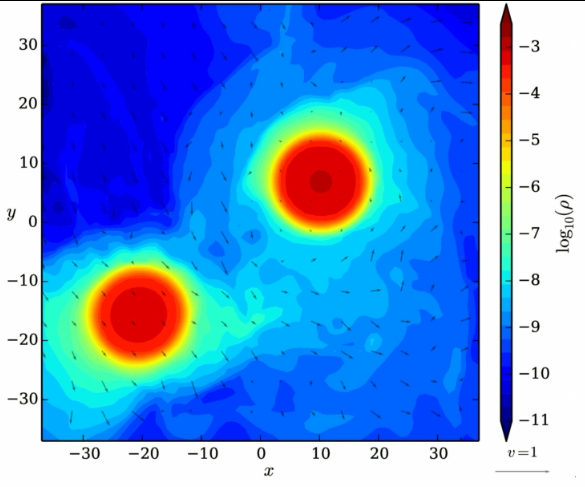

The picture below shows the density profiles in the orbital plane of two merging neutron stars.

Each star has 1.35 solar masses. Both stars have a small spin pointing along the orbital angular momentum.
Below is the density profile in the orbital plane of two equal non-spinning neutron stars.
Each star has 1.35 solar masses. You can click on the picture to see a movie. It shows the inspiral and merger of the two neutron stars.
The next picture shows the density profiles of two unequal merging neutron stars in the orbital plane. The stars have baryonic masses of 2.2 and 1.0 solar masses.

This system contains stars with 1.34 and 1.25 solar masses. The primary star is a millisecond pulsar with a rotation period of 23 ms. The rotation axis of the primary star and the orbital angular momentum are not aligned which leads to precession effects. The system is constructed based on our knowledge of PSR J0737-3039 and how it will evolve until it merges in about 85 million years.
The animation is a combination of different movies and shows inspiral and
merger of two neutron stars with 1.34 and 1.25 solar masses. The different
panels show the density (upper left), the entropy (upper right), the
gravitational wave (lower left) and the ejected material (lower right).
In addition to the visualization we add sound. The sound track is generated
by creating a sinusoidal sound with the same frequency as the
gravitational wave signal and with an amplitude varying proportional to the
gravitational wave's amplitude.
Credit for movie and images:
(c) T. Dietrich (Friedrich Schiller University Jena and Max Planck Institute
for Gravitational Physics); BAM collaboration